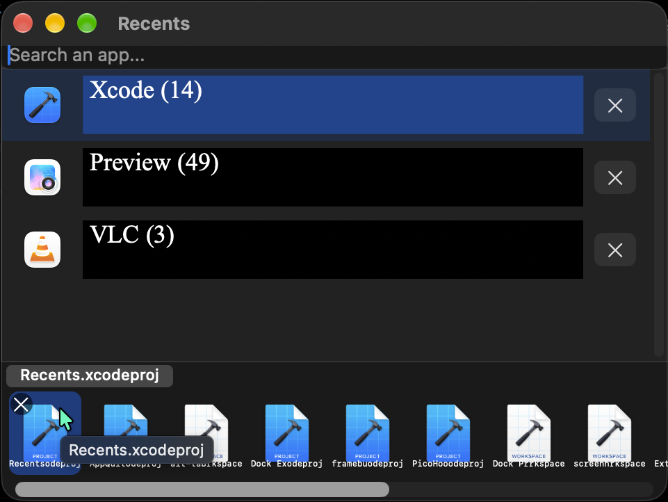

Recents
Re-arrange or delete Recent Items in App Exposé.
Recents adds a recent-items editor to macOS App Exposé so you can rearrange or delete entries.
Latest: v1.00.4 · all releases

Features
- Edit Recent Items directly in App Exposé.
Changelog
v1.00.4
October 25, 2026 · Download Recents-macos-1.00.4.zip
- bump version
v1.00.3
October 23, 2026 · Download Recents-macos-1.00.3.zip
- Show recents overview (mini editor) in app picker w/ keyboard nav, drag and drop
- Menu bar mode
- Select on single click, Enter/double click to open, cmd+enter (Reveal in Finder), cmd+delete (Delete)
v1.00.2
2026 · Download Recents-macos-1.00.2.zip
- v1.00.2
- pdf preview (add white background)
- cmd+0 focuses main window